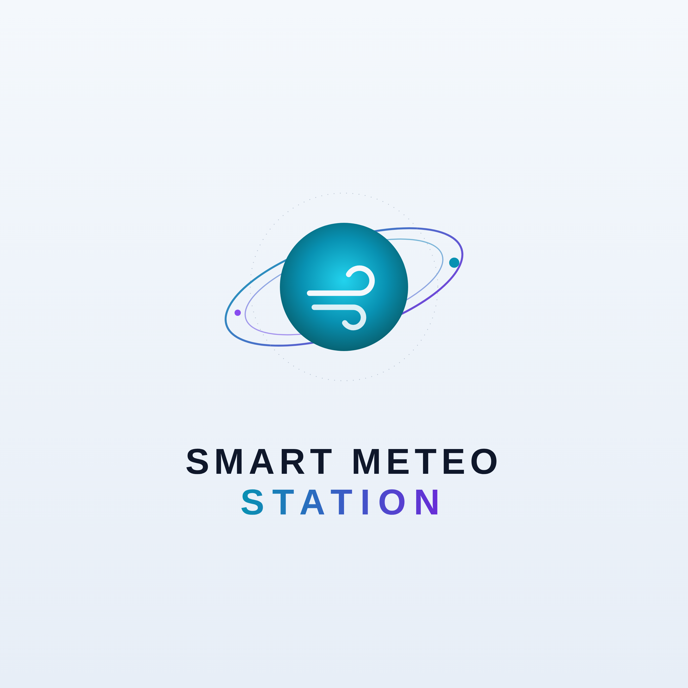

Smart Meteo Station
Il meteo trova posto sulla tua scrivania.
Meteo · Internet Radio · Utility
Un gadget tecnologico utile, connesso e personalizzabile
Smart Meteo Station riunisce in un unico dispositivo touch le informazioni meteo della località selezionata, i dati dell'ambiente interno, funzioni Internet Radio e diverse utility. È pensata per restare sulla scrivania ed essere consultata direttamente dal display, dallo smartphone o dal browser del PC sulla stessa rete locale.
Il tuo punto meteo
Condizioni attuali e previsioni per i prossimi cinque giorni, con dettagli orari da esplorare sul touchscreen.
- Temperatura e umidità interne con storico delle ultime 24 ore
- Vento e raffiche
- Pressione atmosferica
- Pioggia e probabilità di precipitazione
- Indice UV e qualità dell'aria
- Alba, tramonto, temperatura percepita e punto di rugiada
Molto più del meteo
Funzioni aggiuntive da usare durante la giornata, raccolte in un menu touch semplice da consultare.
- Internet Radio con ricerca per paese e genere musicale
- Fino a sei emittenti preferite
- Radar aereo con dettagli degli aeromobili disponibili
- Radar pioggia con mappa e animazione
- Calcolatrice
- Notizie scorrevoli
Connessa al tuo quotidiano
Il pannello web permette di consultare dati e impostazioni anche da smartphone, PC e notebook collegati alla stessa rete locale.
- Display touch a colori 480 × 480 pixel
- Wi‑Fi integrato
- Accesso da browser
- Configurazione guidata di rete e località
Personalizzazione aziendale
Smart Meteo Station può essere personalizzata con il marchio del cliente e una pagina informativa dedicata.
- Logo del cliente
- Pagina informativa aziendale
- Ideale per omaggi, ricorrenze ed eventi
- Prodotto pensato per restare visibile ogni giorno sulla scrivania
Allerta meteo
In presenza di condizioni segnalate per la località selezionata, la stazione può mostrare una schermata di allerta a tutto schermo, immediatamente riconoscibile. È inoltre disponibile uno storico con data, località e fenomeno indicato.
Nota: le segnalazioni derivano dalle previsioni meteo e non sostituiscono i bollettini ufficiali.
Informazioni di prodotto
Smart Meteo Station
Una proposta per chi cerca un accessorio tecnologico da scrivania e un prodotto personalizzabile con il proprio marchio. Per configurazioni, personalizzazioni e informazioni commerciali contatta GDN Creations.
Richiedi informazioni